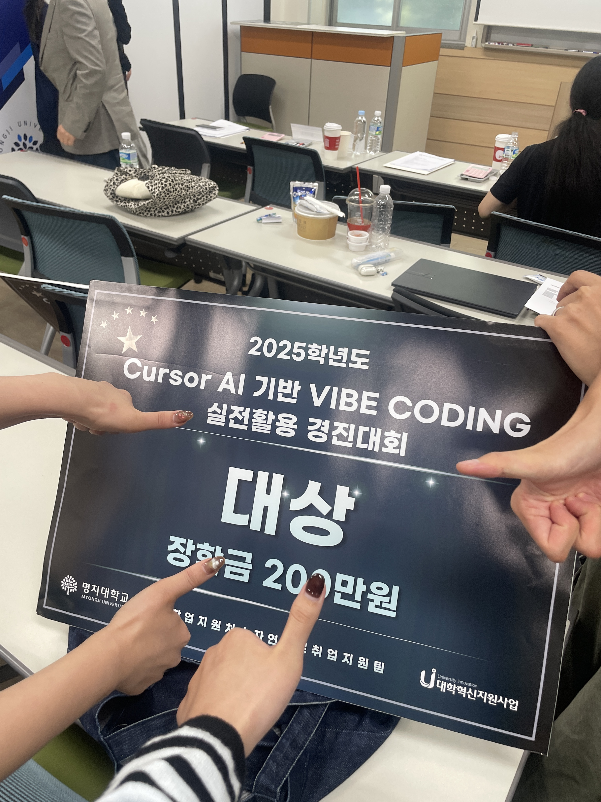
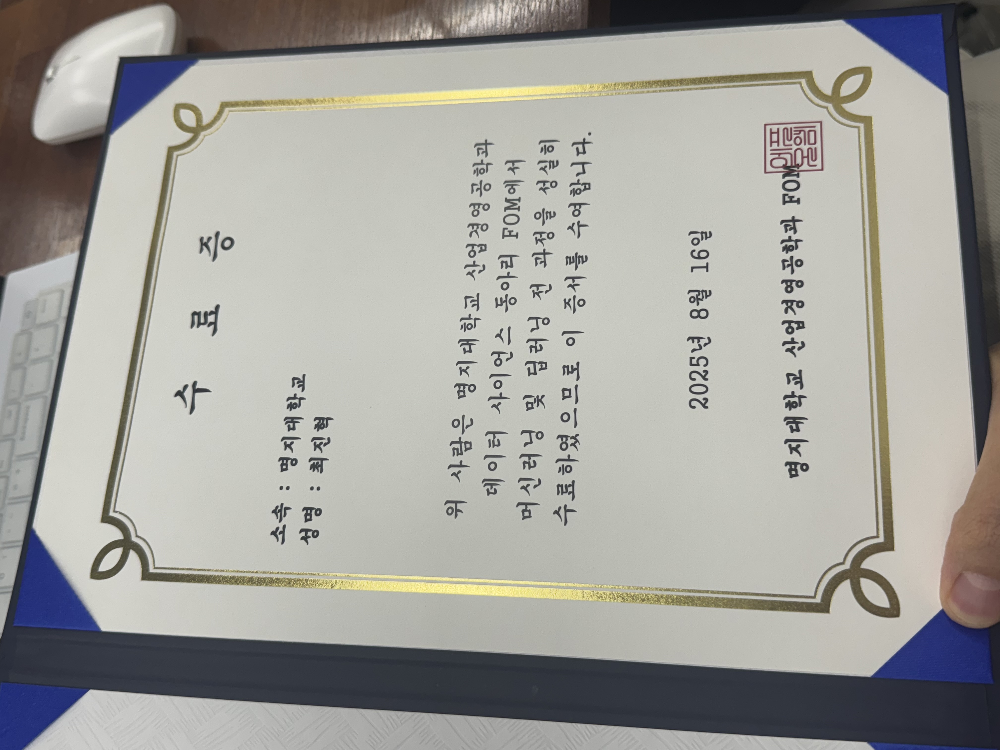

📄 Recommending Usability Improvements with Multimodal LLMs
멀티모달 대규모 언어모델(LLM)을 활용하여 UI/UX의 사용성 개선점을 자동으로 제안하는 연구.
Multimodal LLM
Usability
UI/UX
AI 개발에 관심 있는 명지대학교 정보통신공학과 4학년, 최진혁입니다.
안녕하세요! 저는 최진혁입니다.
명지대학교 정보통신공학과 4학년에 재학 중이며,
AI/ML 분야에 깊은 관심을 가지고 공부하고 있습니다.
For tomorrow better than today
| 기술 | 숙련도 | 주요 활용 분야 | 관련 수업 |
|---|---|---|---|
| Python | 🌟🌟🌟🌟🌟 | 데이터 분석, AI/ML, 자동화 스크립트 | 파이썬프로그래밍, 데이터분석과인공지능 |
| SQL | 🌟🌟🌟🌟🌟 | 데이터베이스 설계 및 쿼리 작성 | 데이터베이스 |
| TensorFlow / PyTorch | 🌟🌟🌟🌟 | 기계학습 모델 구현, 딥러닝 | 기계학습, 딥러닝, Vision및AI응용 |
| OpenCV | 🌟🌟🌟 | 컴퓨터 비전, 이미지 처리 | Vision및AI응용 |
| HTML / CSS / JavaScript | 🌟🌟🌟 | 웹 프론트엔드 개발 | 인터넷 프로그래밍 |
| Java | 🌟🌟🌟 | 객체지향 설계, 앱 프로그래밍 | 자바, 모바일 프로그래밍 |
| C / C++ | 🌟🌟🌟 | 시스템 프로그래밍, 마이크로프로세서 제어 | 고급C언어, C++Programming, 마이크로프로세서 |
| Git / GitHub | 버전 관리, 팀 협업 | Github 외부 강의 참고 | |
| 🌟 5개 기준 | 자체 평가 | |||
현재까지 진행한 주요 프로젝트를 소개합니다.
알약을 촬영하면 종류를 자동으로 인식하고,
AI 기반으로 복약 일정을 관리해주는 스마트 복약 관리 서비스.
본 영화를 기록·관리하는 웹 서비스.
챗봇에게 줄거리나 관련 내용을 물어보면 원하는 영화를 찾아줍니다.
와인 데이터셋을 활용한 데이터 분석 미니 프로젝트.
데이터 전처리·시각화·통계 분석으로 와인 품질 인사이트를 도출했습니다.
사용자의 이력서(CV)를 AI 기반으로 분석하고
맞춤형 개선 피드백을 제공하는 서비스.
OCR 기술로 식품 성분표를 자동 인식,
알레르기 유발 성분을 즉시 감지하는 프로젝트.
DGIST(대구경북과학기술원) 연구 인턴으로 참여하며 진행한 논문 리뷰입니다. 최신 LLM 및 소프트웨어 공학 분야 논문을 읽고 핵심 아이디어와 방법론을 정리했습니다.
멀티모달 대규모 언어모델(LLM)을 활용하여 UI/UX의 사용성 개선점을 자동으로 제안하는 연구.
주석 처리된 결함 코드(commented-out code)가 AI 코드 생성의 결함을 어떻게 증가시키는지 분석한 연구.
자연어 명세로부터 테스트 오라클을 추론하여 웹을 자동으로 End-to-End 테스트하는 에이전트 연구.
| 구분 | 학점 | 기준 |
|---|---|---|
| 전체 평점 | 4.42 | 4.5 만점 |
| 전공 평점 | 4.42 | |
| 명지대학교 정보통신공학과 기준 | ||


